"L'unica cosa di cui avere paura è la paura stessa" è un consiglio stupido.
Certo, non stare a fare scorte di carta igienica (o di pasta NdT) - ma se i politici hanno paura della paura, minimizzeranno i veri pericoli per evitare il "panico di massa".
Onestamente, noi (Marcel, epidemiologo e Nicky, arte/codice) siamo preoccupati. E crediamo che lo sia anche tu! Ecco perché abbiamo incanalato la nostra paura nel fare queste simulazioni giocabili, in modo che tu possa incanalare la tua paura verso la comprensione.
- Gli ultimi mesi (epidemiologia di base, il modello SEIR, R e R0)
- I prossimi mesi (lockdown, tracciamento dei contatti, mascherine)
- I prossimi anni (perdita di immunità? assenza di vaccino?)
Questa guida (originale pubblicato il 1 Maggio 2020. clicca questa nota!→1) vuole infonderti sia speranza sia paura. Per battere COVID-19 in un modo che protegge anche la nostra salute mentale e finanziaria, abbiamo bisogna di ottimismo per fare dei piani e di pessimismo per avere un piano B. Come disse Gladys Bronwyn Stern: “L'ottimista inventa l'aereoplano e il pessimista il paracadute.”
Quindi, tenetevi forte: stiamo per attraversare una zona di turbulenza.

I piloti d'aereo usano i simulatori di volo per imparare a non far schiantare gli aereoplani.
Gli epidemiologi usano simulatori di epidemia per imparare a non far schiantare l'umanità.
Quindi, facciamo un "simulatore di volo epidemiologico" davvero, davvero semplice! In questa simulazione, gli
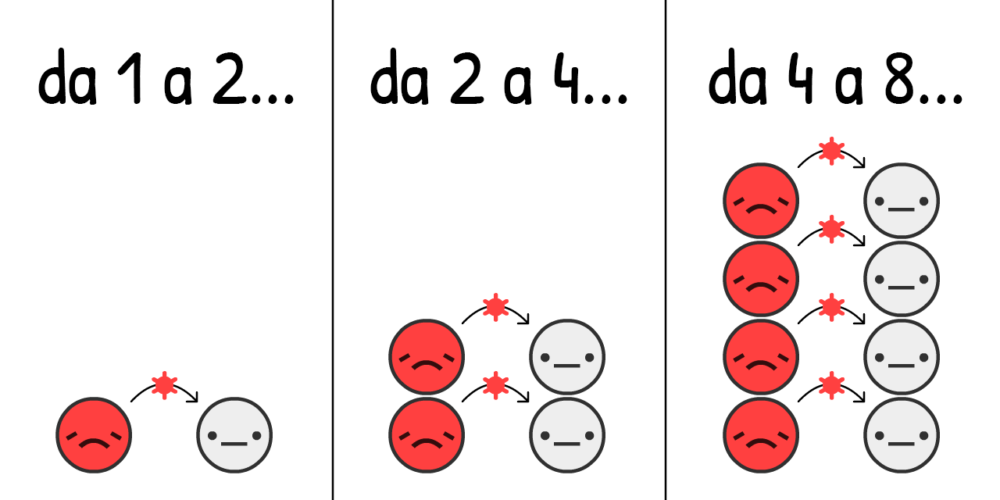
Si stima che, all'inizio di una epidemia di COVID-19, il virus viene trasmesso da un
Se simuliamo questo "raddoppiare ogni 4 giorni" e nient'altro, su una popolazione che inizia con solo lo 0,001% di
Clicca "Gioca" per "giocare" con la simulazione! Dopo puoi rigiocarla con impostazioni diverse: (avvertenze tecniche: 3)
Questa è la curva di crescita esponenziale. Inizia piano, poi esplode. Da "Ah, è solo un'influenza" a "Ah bè, però le influenze non creano fosse comuni nelle città ricche".
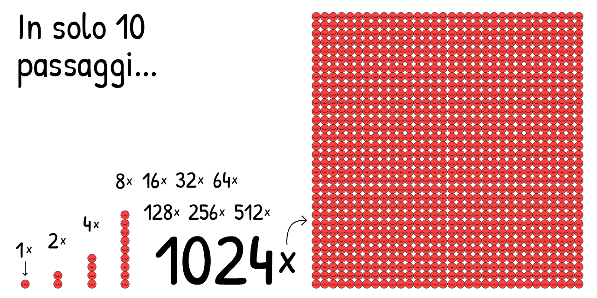
Ma questa simulazione è sbagliata. La crescita esponenziale, grazie a dio, non può andare avanti per sempre. Una cosa che impedisce al virus di fermarsi è se altri hanno già il virus:
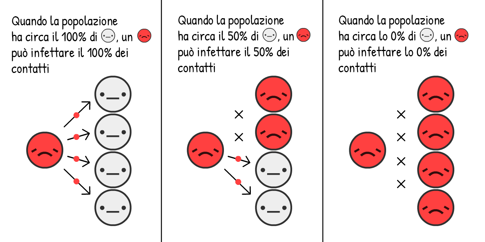
Più
Come cambia la crescita di un'epidemia? Scopriamolo:
Questa è la curva di crescita logistica "a forma di S". Inizia piano, esplode, poi torna a rallentare.
Ma questa simulazione è ancora sbagliata. Ci stiamo perdendo il fatto che le persone
Per semplicità, fingiamo che tutte le persone
Si stima che con il COVID-19 rimani
Questa è l'opposta della crescita esponenziale, è la curva di decadimento esponenziale.
Ora, cosa succede se simuli la crescita logistica a forma di S con la guarigione?

Scopriamolo.
La curva rossa sono i casi attivi
La curva grigia sono i casi totali
E questo è il modo in cui quella famosa curva viene fuori! Non è una curva a campana, non è neanche una curva "log-normale". Non ha un nome. Ma l'hai vista millemila volta, pregando che si appiattisca.
Questo è il modello SIR,5
(
la seconda idea più importate dell'epidemiologia di base:
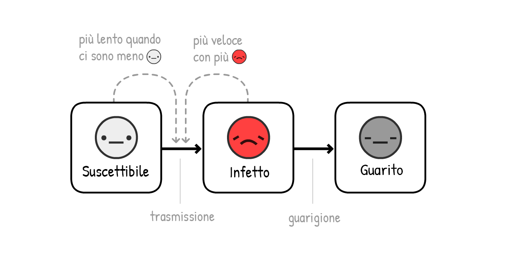
NOTA: le simulazioni usate per guidare le decisioni politiche sono molto, molto più sofisticati di questa! Ma il modello SIR è lo stesso adatto a spiegare i principi generali, anche se si perde le sfumature.
A dire il vero, aggiungiamo un'altra sfumature: prima che un
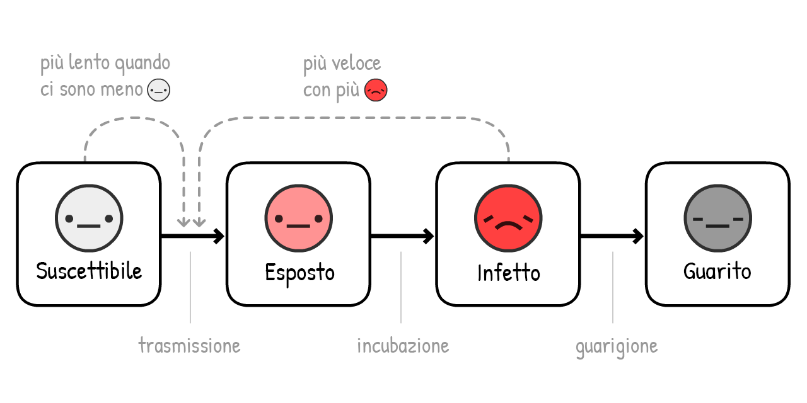
(Questa variante è chiamata il modello SEIR6, dove la "E" sta per
Per il COVID-19, si stima che tu sia
La curva rossa+ rosa sono i casi attivi (infettivi
La curva grigia è i casi totali (attuali + guariti
Non cambia molto! Quanto a lungo resti
Perché è così? Perché questa è la prima e più importante idea dell'epidemiologia di base:

Abbreviazione per "Numero di riproduzione". E' il numero medio di persone che un
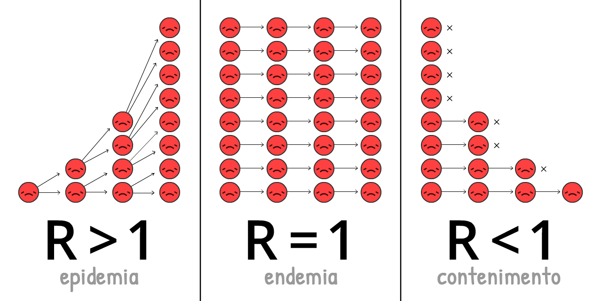
R cambia nel corso di una epidemia, a mano a mano che c'è più immunità e si fanno più interventi.
R0 (si pronuncia R-con-zero) è R all'inizio di una epidemia, prima di immunità ed interventi. R0 riflette più da vicino la potenza del virus in sè, ma cambia comunque da luogo a luogo. Per esempio, R0 è più alto nelle città che nelle aree rurali.
(La maggior parte degli articoli di giornale – ed anche alcuni articoli di ricerca! – confondono R con R0. Di nuovo, la terminologia scientifica è pessima)
Il R0 per la influenza stagionale è attorno a 1,288. Questo significa che all'inizio di una epidemia di influenza, ogni
L'R0 per COVID-19 si stima essere intorno a 2,29 benché uno studio non ancora portato a termine stima che fosse 5,7 a Wuhan.10
Nelle nostre simulazione – sia all'inizio che mediamente – un
Gioca con questo calcolatore di R0, in modo da vedere come R0 dipende dal tempo di guarigione e dal tempo di nuova infezione:
Ma ricorda, meno
Quando abbastanza persona hanno l'immunità, R < 1, e il virus è contenuto! Questa è chiamata immunità di gregge. Per l'influenza, l'immunità di gregge si raggiunge tramite un vaccino. Cercare di ottenere una "immunità di gregge naturale" lasciando che la gente si infetti è una idea pessima. (Ma non per le ragioni che magari pensi! Dopo spieghiamo.)
Ora, giochiamo di nuovo con il modello SEIR, ma mostriamo R0, R nel tempo, e la soglia di immunità di gregge:
NOTA: I casi totali non si fermano all'immunità di gregge ma vanno oltre!! E attraversano la soglia esattamente nel momento del picco. (Questo succede comunque tu cambi le impostazione – prova pure!)
Questo perché quando ci sono i non-
Se c'è una sola lezione che ti porti a casa da questa guide, eccola – è un diagramma estremamente complesso quindi per favore prenditi il tempo che ti serve per capirlo per bene:
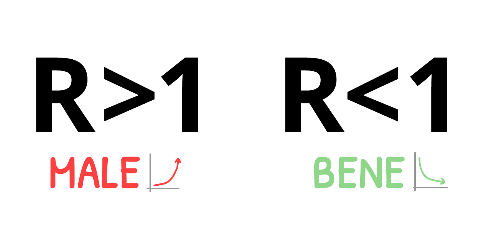
Ciò significa: NON dobbiamo impedire tutte i contagi, o neanche quasi tutti i contagi, per fermare il COVID-19!
E' un paradosso. Il COVID-19 è estremamente contagioso, ma per fermarlo, dobbiamo "solo" impedire più del 60% delle infezioni. 60%?! Se fossimo a scuola sarebbe al più una sufficienza scarsa. Ma se R0 è 2,5, tagliarlo del 61% ci dà R = 0,975, per cui R < 1, e il virus è fermato! (formula esatta:12)
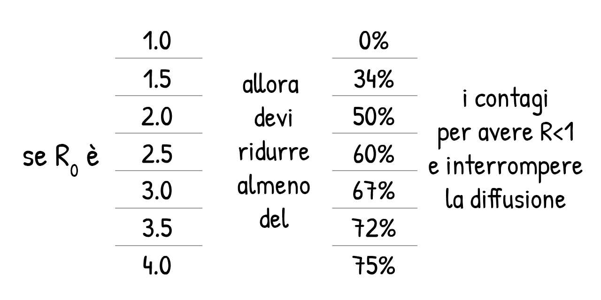
(Se pensi che R0 or altri numeri nelle nostre simulazioni siano troppo alti o troppo bassi va bene, stai mettendo alla prova le nostre assuzioni! Ci sarà una "Modalità Sandbox" alla fine di questa guida, dove puoi inserire i tuoi numeri e simulare quello che succede.)
Ogni intervento contro COVID-19 di cui hai sentito parlare – lavarsi le mani, distanziamento fisico/sociale, lockdown, autoisolamento, tracciamento di contatti e quarantena, mascherine, anche l'"immunità di gregge" – stanno tutti cercando di fare la stessa cosa:
Avere R < 1.
Quindi ora, usiamo il nostro "simulatore di volo epidemio" per cercare di capire questa cosa: Come possiamo avere R < 1 in una modo che siano protette anche la nostra salute mentale e le nostre finanze?
Tenetevi forte per un atterraggio di emergenza...
...sarebbero potuti andare peggio. Ecco un universo parallelo che abbiamo evitato:
Scenario 0: Non Fare Assolutamente Niente
Delle persone che contraggono il COVID-19, circa 1 su 20 ha bisogno di esssere ricoverata in un reparto di terapia intensiva.13 In un Paese ricco come gli Stati Uniti, c'é 1 posto in terapia intensiva ogni 3400 people.14. Di conseguenza, gli USA sono in grado di gestire una situazione in cui un massimo di 20 persone ogni 3400 - ossia lo 0.6% della popolazione - sono infette contemporaneamente.
Anche più che triplicando tale capacità portandola al 2%, ecco cosa sarebbe successo se non avessimo fatto assolutamente niente:
Molto male.
Ecco cosa rileva il report dell' Imperial College del 16 marzo: non facendo nulla, i posti in terapia intensiva si esauricono, con oltre l'80% della popolazione che si ammala. (ricorda: il numero totale dei casi supera la soglia dell'immunità di gregge)
Se anche solo lo 0.5% di chi contrae il virus muore - un'assunzione ottimistica, nello scenario in cui non ci sono più posti in terapia intensiva - per un Paese grande come gli USA, con 300 milioni di abitanti, lo 0.5% dell' 80% di 300 milioni è pur sempre 1.2 milioni di morti... SE non avessimo fatto niente.
(Su molti giornali & social media è stato riportato "l'80% della popolazione verrà contagiato" senza "SE NON FACCIAMO NIENTE". La paura è stata incanalata nei click, non nella comprensione dei fatti. Sigh.)
Scenario 1: Appiattire La Curva / Immunità Di Gregge
Il piano "Appiattire la Curva" è stato caldeggiato da ogni singola organizzazione per la salute pubblica, mentre il piano originale del Regno Unito, quello dell'"Immunità Di Gregge" è stato universalmente fischiato. Ma si trattava dello stesso piano. Il Regno Unito l'ha semplicemente comunicato in modo inefficace.15
Entrambi i piani, tuttavia, presentavano un problema letteralmente fatale.
Innanzitutto, diamo uno sguardo alle due maniere principali di "appiattire la curva": il lavaggio delle mani & il distanziamento fisico.
Nei Paesi ad alto reddito, lavarsi le mani più spesso diminuisce l'incidenza di influenze & raffreddori del ~25%16, mentre il lockdown imposto al livello dell'intera città di Londra ha ridotto i contatti ravvicinati del ~70%17. Quindi, assumiamo che lavarsi spesso le mani possa ridurre R al più del 25%, e che il distanziamento sociale possa abbassarlo al più del 70%:
Gioca con questo calcolatore per vedere come la percentuale di non-
Ora, simuliamo cosa accadrebbe ad un'epidemia di COVID-19 se, a partire da Marzo 2020, avessimo aumentato la frequenza con cui ci laviamo le mani ma imponendo un distanziamento sociale in forma leggera – in questo modo, R si abbassa ma rimane superiore a 1:
Tre cose da tenere a mente:
- In questo modo, il numero totale di casi diminuisce! Anche se R non diventa < 1, ridurlo salva delle vite, riducendo il 'surplus' rispetto all'immunità di gregge. Molte persone credono che "Appiattire La Curva" rallenti i contagi senza ridurne il numero totale. Questo è impossibile in qualsiasi modello epidemiologico, anche dei più banali. Ma dal momento che la stampa ha riportato il fatto che "oltre l'80% verrà contagiato" come inevitabile, la gente si è messa in testa che il numero totale dei casi sarà lo stesso in qualsiasi caso. Sigh.
- Grazie all'azione sopra descritta, il numero di casi attivi raggiunge il picco prima del raggiungimento dell'immunità di gregge. Difatti, in questa simulazione, il numero totale di casi arriva ad essere soltanto leggermente al di sopra della soglia dell'immunità di gregge – il piano del Regno Unito! A tal punto, con R < 1, si possono lasciar perdere tutti gli interventi straordinari, l'epidemia di COVID-19 è contenuta! Solo che c'è un problema...
- Finiscono comunque i posti in terapia intensiva. Per diversi mesi. (e ricorda, li abbiamo già triplicati per queste simulazioni)
Era questo l'altro risultato del report dell'Imperial College del 16 Marzo, che ha convinto il Regno Unito ad abbandonare il suo piano iniziale. Ogni tentativo di mitigazione (ridurre R, ma lasciare che resti > 1) è destinato al fallimento. L'unica soluzione è la soppressione (ridurre R in modo che sia < 1).
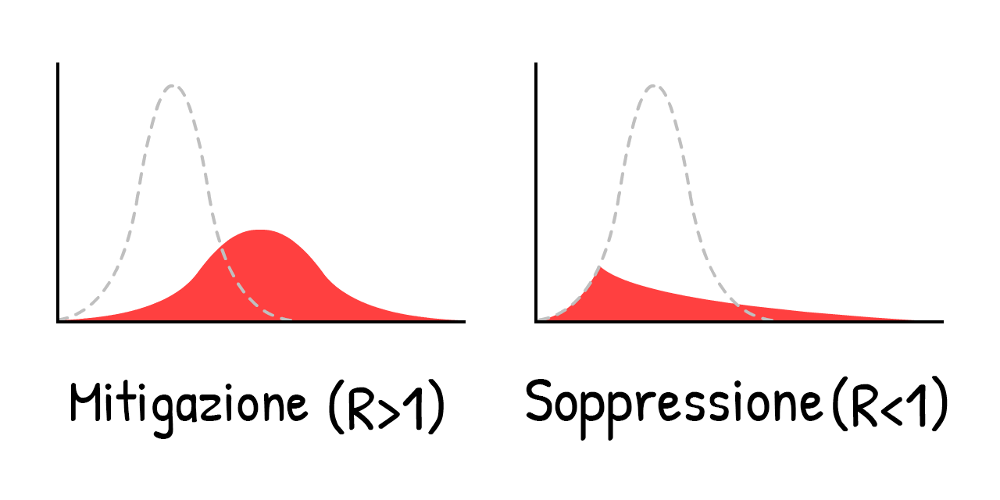
Cioé, non ci si può limitare ad "appiattire" la curva, la curva va schiacciata. Per esempio, tramite un...
Scenario 2: Diversi Mesi Di Lockdown
Vediamo cosa succede se schiacciamo la curva con un lockdown di 5 mesi, riducendo il numero degli
Oh.
E' la "seconda ondata" di cui tutti parlano. Appena interrompiamo il lockdown, R torna ad essere > 1. Quindi, un singolo
Un lockdown non è una cura, è solo un nuovo inizio.
E quindi? Andiamo avanti di lockdown in lockdown?
Scenario 3: Lockdown Intermittente
Questa soluzione è stata suggerita prima dal report dell'Imperial College del 16 marzo, poi nuovamente da un paper di Harvard.19
Ecco una simulazione: (Dopo aver osservato lo "scenario preregistrato", puoi provare a simulare un tuo programma di lockdown spostando gli slider durante la simulazione! Ricorda che puoi mettere in pausa & riprenderla, oltre che cambiarne la velocità)
In questo modo si riuscirebbe a non sforare la capacità dei reparti di terapia intensiva! Ed è molto meglio di un lockdown di 18 mesi che va avanti finché non è disponibile un vaccino. Basta semplicemente... chiudere tutto per qualche mese, riaprire per qualche altro mese, e così via finché il vaccino non è disponibile. (E se il vaccino non si trova, continuare finché non si raggiunge l'immmunità di gregge... nel 2022.)
Ma attenzione: sarebbe bello poter semplicemente tracciare una linea per rappresentare la capacità dei reparti di terapia intensiva, ma ci sono anche molti fattori importanti che non possiamo simulare qui. Per esempio:
Salute Mentale: La soluitudine è uno dei più importanti fattori di rischio legati a depressione, ansia e suicidi, ed è correlata alla morte precoce quando fumare 15 sigarette al giorno.20
Solidità finanziaria: "E l'economia?" suona come la frase di qualcuno che metter il denaro davanti alle vite umane, ma "l'economia" non riguarda solo il mercato azionario: riguarda la possibilità per le persone di procurare vitto e alloggio per i loro cari, di investire nel futuro dei loro figli, di godersi l'arte, il cibo, i videogiochi - quelle cose che rendono la vita degna di essere vissuta. E oltretutto, la povertà stessa ha un impatto tremendo sulla salute sia mentale che fisica.
Non sto dicendo che dovremmo rifiutare nuovi lockdown! Più avanti, guarderemo ai lockdown "circuit breaker". Ma non è l'ideale.
Ma un attimo... Taiwan e la Corea del Sud non hanno già contenuto il COVID-19? Per 4 mesi interi, senza lockdown di lunga durata?
Come?
Scenario 4: Testare, Tracciare, Isolare
"Certo, *avremmo potuto* comportarci come Taiwan & la Corea del Sud hanno fatto all'inizio, ma ora è troppo tardi. Ci siamo persi la partenza."
Ma appunto! “Un lockdown non è una cura, è solo un nuovo inizio”... e un nuovo inizio è quello di cui abbiamo bisogno.
Per capire come Taiwan & la Corea del Sud siano riuscite a tenere sotto controllo il COVID-19, bisogna capire quali siano le tempistiche esatte di un'infezione da COVID-1921:
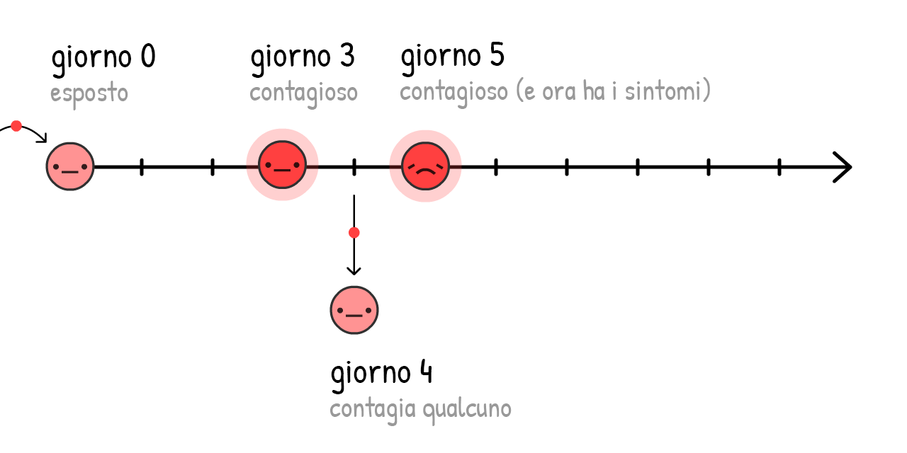
Se i contagiati si autoisolano solo quando già sanno di essere malati (cioè, al percepire i sintomi), il virus può comunque diffondersi:
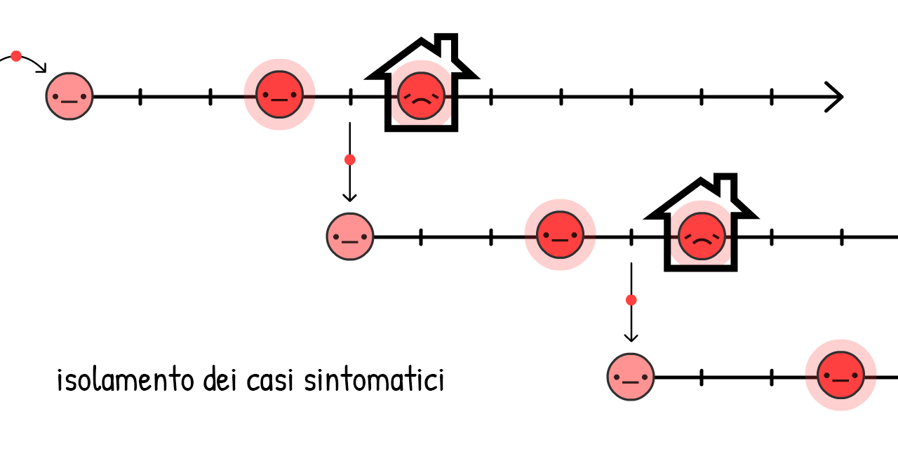
Difatti, il 44% di tutti i contagi è così: pre-sintomatico! 22
Ma se troviamo e mettiamo in quarantena le persone che sonon state recentemente a stretto contatto con un caso sintomatico... fermiamo la diffusione del virus, standogli un passo avanti!
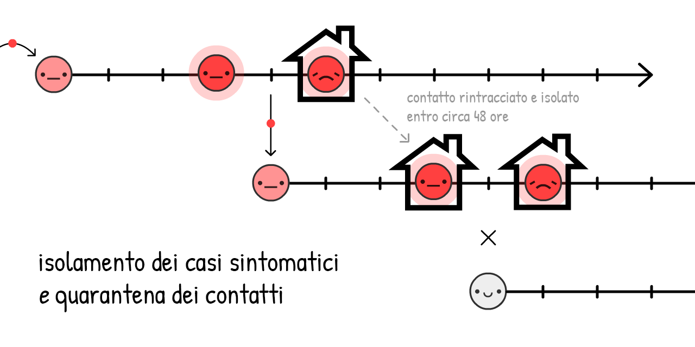
Si chiama contact tracing (tracciamento dei contatti). Si tratta di una vecchia idea, usata su una scala senza precedenti per contenere l'Ebola23, ed è una parte essenziale di come Taiwan & la Corea del Sud stiano controllando il COVID-19!
(Ci permette anche di utilizzare il limitato numero di test che abbiamo a disposizione in modo più efficiente, in modo tale da trovare
Tradizionalmente, il tracciamento avviene attraverso interviste faccia a faccia, che però da sole sono troppo lente per la finestra di ~48 ore del COVID-19. Ecco perché gli addetti al contact tracing hanno bisogno di aiuto, e di essere supportati – NON sostituiti – dalle app di contact tracing.
(Questa idea di usare un'app nella lotta al COVID-19 non viene dai "nerd": è stati inizialmente proposta da un team di epidemiologi di Oxford.)
Un attimo, app che tengono traccia delle persone con cui sei stato in contatto?... Non significa rinunciare alla privacy, arrendersi al Grande Fr?
Manco per niente! DP-3T, un team di epidemiologi & crittografi (compreso uno di noi, Marcel Salathé) sta già realizzando un'app di contact tracing – il cui codice è pubblicamente accessibile – che non rivela alcuna informazione sulla tua identità, posizione, contatti, neanche sul numero di contatti che hai avuto.
Ecco come funziona:
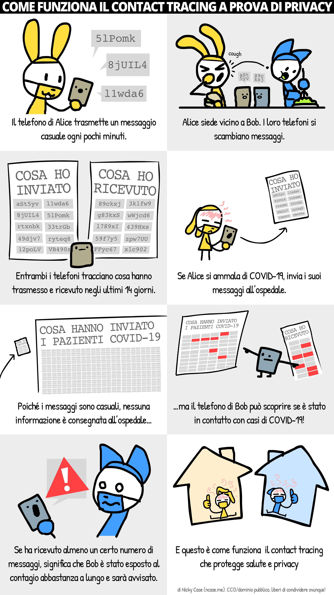
(Qui trovi il fumetto completo. Dettagli su "pranking"/falsi positivi/etc nella nota a pié di pagina:24)
Assieme ad altri gruppi del genere, come TCN Protocol25 e MIT PACT26, hanno ispirato Apple & Google a predisporre Android/iOS per un contact tracing a tutela della privacy.27 (Non ti fidi di Google/Apple? Bene! Il bello di questo sistema è che non c'é bisogno che tu ti fidi!) Presto la tua organizzazione per la salute pubblica potrebbe chiederti di scaricare un'app. Se tutela la tua privacy rendendo il suo codice pubblicamente accessibile, ti prego di farlo!
Ma come si fa con chi non ha uno smartphone? E con le infezioni prese tramite le maniglie? E con i "veri" casi asintomatici? Le app di contact tracing non possono tener traccia di tutte le trasmissioni... e va bene così! Non c'é bisogno di intercettare tutti i contagi, il 60%+ è sufficiente per arrivare a R < 1.
(Nota-sproloquio sulla confusione tra presintomatici e "veri" asintomatici. I "veri" asintomatici sono rari:28)
Isolare i casi sintomatici ridurrebbe R fino al 40%, e mettere i loro contatti pre/asintomatici lo ridurrebbe R fino al 50%29:
* I casi sintomatici contribuiscono a R = 0.8 (40%)
* I casi presintomatici contribuiscono a R = 0.9 (45%)
* I casi asintomatici contribuiscono a R = 0.1 (5%, though their model has uncertainty and it could be much lower)
* Gli elementi dell'ambiente, come le maniglie delle porte, contribuiscono a R = 0.2 (10%)
<!--And add up the pre- & a-symptomatic contacts (45% + 5%) and you get 50% of R!-->
Sommando i contatti presintomatici a quelli asintomatici (45% + 5%) otteniamo il 50% di R!Quindi, anche senza mettere in quarantena il 100% dei contatti, possiamo arrivare a R < 1 senza un lockdown! Molto meglio per la nostra salute mentale e finanziaria. (Per quel che riguarda i costi cui vanno incontro coloro che si autoisolano o vengono messi in quarantena, è compito dei governi supportarli - pagamento dei test, salvaguardia dei posti di lavori, congedo pagato con sussidi, ecc. Anche così, i costi sono molto più bassi di quelli di un lockdown intermittente.)
Teniamo quindi R < 1 finché non è pronto un vaccino, che trasforma i suscettibili
(Nota: questa calcolatrice fa finta che l'efficacia dei vaccini sia del 100%. Tieni presente però che in realtà bisogna compensare [il fatto che non è così, NdT] vaccinando oltre la soglia dell'"immunità di gregge" per arrivare effettivamente all'immunità di gregge)
Bene, abbiamo parlato abbastanza. Ecco una simulazione di:
- Un lockdown di qualche mese, finché sostenibile...
- Il passaggio a "Testare, Tracciare, Isolare" finché sostenibile...
- Vaccinare abbastanza persone, il che significa...
- Vittoria.
Allora è così che si fa un atterraggio di emergenza su questo aereo.
Ecco come battiamo il COVID-19.
...
Ma che si fa se le cose vanno male comunque? Le cose sono già andate tremendamente male. E' paura, e questo è positivo! La paura ci dà le energie per creare piani di backup.
Il pessimista inventa il paracadute.
Scenario 4+: Mascherine Per Tutti, Estate, Circuit Breakers
Cosa succederebbe se R0 fosse molto più alto di quel che pensavamo e gli interventi di cui sopra, anche con una forma leggera di distanziamento, non fossero ancora abbastanza per arrivare a R < 1?
Ricorda, anche se non si arriva ad R < 1, ridurre R significa comunque ridurre il surplus nei casi totali, salvando vite. Ma in ogni caso, R < 1 è l'ideale, quindi ecco qualche altro modo per ridurre R:
Mascherine Per Tutti:
"Aspetta," potresti chiederti, "Mi pareva che le mascherine non impedissero di ammalarsi?"
Hai ragione. Le mascherine non impediscono che tu ti ammali[^incoming]... impediscono che tu faccia ammalare gli altri.
TODO: [^incoming]: “Nessuna di queste mascherine chirurgiche ha dato prova di funzionare da filtro e adattarsi al volto in maniera idonea per essere considerata un dispositivo di protezione respiratorio.” Tara Oberg & Lisa M. Brosseau
TODO: [^outgoing]: “La riduzione complessiva di 3.4 volte [70% reduction] in aerosol copy numbers we observed combined with a nearly complete elimination of large droplet spray demonstrated by Johnson et al. suggests that surgical masks worn by infected persons could have a clinically significant impact on transmission.” Milton DK, Fabian MP, Cowling BJ, Grantham ML, McDevitt JJ
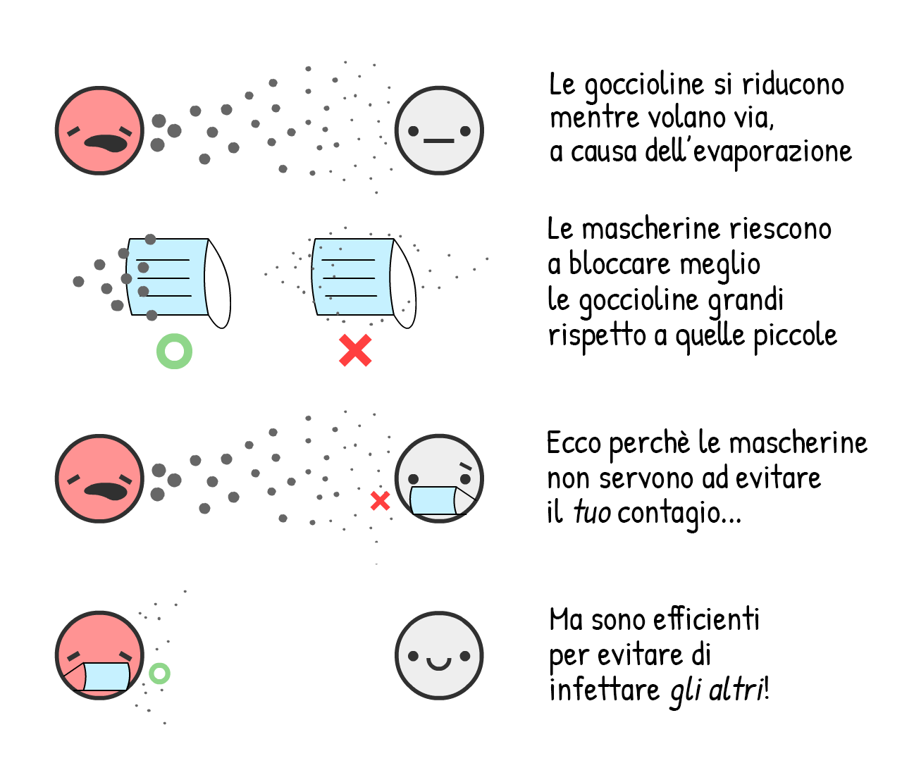
Tanto per metterci un numero: le mascherine chirurgiche, se indossate dalla persona infetta riducono i virus di raffreddore e influenza negli aerosols del 70%.[^outgoing] Ridurre le trasmissioni del 70% avrebbe un impatto paragonabile a quello di un lockdown!
Tuttavia, non sappiamo per certo quale sia l'impatto delle mascherine sul COVID-19 nello specifico. Quando si fa scienza, un risultato andrebbe pubblicato solo se sicuro al 95%. (...in teoria.30) Le mascherine, al 1 Maggio 2020, sono "sicure a meno del 95%".
Ad ogni modo, le epidemie sono come il poker. Scommetti solo se sei sicuro al 95% e perderai tutto quel che è in gioco. Come nota un recente articolo sul British Medical Journal, 31 nelle situazioni di incertezza dobbiamo fare analisi costi/benefici. Per esempio:
Costi: Se mascherine fai-da-te di stoffa (che hanno i ~2/3 dell'efficacia di quelle chirurgiche 32), bassissimi. Nel caso di mascherine chirurgiche, più alti ma comunque abbastanza contenuti.
Benefici: Anche ci fosse una probabilità del 50-50 che le maschere chirurgiche riducano la trasmissione dello 0% o del 70%, il "valore atteso" medio sarebbe comunque del 35%, lo stesso di un mezzo lockdown! Supponiamo dunque che le mascherine chirurgiche riducano R fino al 35%, al ribasso per la nostra incertezza. (Anche in questo caso, è possibile modificare le nostre assunzioni spostando gli slider su e giù)
(altri argomenti a favore/contro le mascherine:33)
"Sono difficili da indossare correttamente." E' difficile anche lavarsi le mani secondo le Linee Guida dell'OMS - seriamente, "Step 3) palmo destro sopra il dorso sinistro"?! - ma questo non ci impedisce di raccomandare di lavarsi le mani, perché farlo in modo imperfetto è comunque meglio di niente.
"Farà sì che le persone stiano meno attente a lavarsi le mani e al distanziamento sociale." Certo, infatti le cinture di sicurezza fanno sì che la gente ignori i cartelli stradali, e il filo interdentale fa sì che la gente mangi rocce. Seriamente, noi sosterremmo il contrario: le mascherine ci ricordano in modo tangibile e costante di stare attenti - e in Asia orientale, sono anche un simbolo di solidarietà!
Da sole, le mascherine non porteranno R ad essere < 1. Ma se il lavarsi le mani e il "Testare, Tracciare, Isolare" ci portassero solo ad R = 1.10, avere anche solo 1/3 delle persone che indossano le mascherine ribalterebbe la situazione: R < 1, virus contenuto!
Estate:
Ok, non è un "intervento" sotto il nostro controllo, ma aiuterà! Alcune testate giornalistiche riportano che l'estate non avrà conseguenze sul COVID-19. Hanno ragione a metà: l'estate non porterà R ad essere < 1, ma ridurrà R.
Per il COVID-19, ogni 1° Celsius (1.8° Fahrenheit) extra fa scendere R del 1.2%.34 La differenza estate-inverno a New York è di 26°C (47°F),35 quindi l'estate farà scendere R del ~31%.
Da sola, l'estate non porterà R ad essere < 1, ma se abbiamo risorse limitate, in estate possiamo ridurre la scala su cui adottiamo certe misure - in modo da poterle riprendere ad applicare su larga scala in inverno.
Un "Circuit Breaker" Il Lockdown:
E se tutto questo non fosse ancora abbastanza per arrivare a R < 1... potremmo riproporre il lockdown.
Ma non dovremmo andare avanti countinuando a chiudere per 2 mesi, riaprire per 1 eccetera eccetera! Dal momento che R è ridotto, avremmo bisogno di solo un paio di altri lockdown "circuit breaker" before a vaccine is available. (Di recente, Singapore ha dovuto fare così, "nonostante" avesse controllato il COVID-19 per 4 mesi. Non si tratta di un fallimento: è un passo necessario per il successo.)
Ecco una simulazione di uno scenario "pigro":
- Lockdown, poi
- Una moderata dose di igiene & "Testare, Tracciare, Isolare", con una dose ridotta di "Mascherine Per Tutti", poi...
- Un ulteriore lockdown "circuit breaker" nell'attesa di un vaccino.
Questo senza stare nemmeno a menzionare tutte le altre misure che potremmo prendere, per ridurre ulteriormente R:
- Restrizioni sugli spostamenti/quarantene
- Controlli della temperatura nei centri commerciali e nelle scuole
- Pulizie a fondo dei luoghi pubblici
- Sostituzione delle strette di mano con il foot-bumping
- E tutte le altre trovate che l'ingegno umano ci porterà
. . .
Speriamo che questi piani ti diano speranza.
Anche in uno scenario pessimistico, è possibile sconfiggere il COVID-19, proteggendo la nostra salute mentale e la nostra stabilità economica. Usiamo il lockdown come "tasto di reset", teniamo R < 1 tramite isolamento dei casi + contract tracing a tutela della privacy + mascherine quantomeno di stoffa per tutti... e la vita può tornare più o meno normale!
Certo, magari avrai le mani secche. Ma potrai organizzare un appuntamento in fumetteria! Potrai uscire con gli amici per guardare le ultime novità di Hollywood. Potrai guardare la gente in biblioteca, rallegrandoti del fatto che la gente si diletta del mero essere vivi.
Anche nella peggiore delle ipotesi... la vita continua.
Perciò, adesso facciamo dei piani per qualche scenario ancora peggiore. Atterraggio in acqua, prendete il giubbotto di salvataggio e seguite il sentiero luminoso fino alle uscite di emergenza:
Prendi il COVID-19 e guarisci. Oppure ti vaccini per il COVID-19. In ogni caso, ora sei immune...
...per quanto tempo?
- COVID-19 è molto simile alla SARS, che rende immuni i sopravvissuti per 2 anni.[^SARS immunity]
- I coronavirus che causano "l'influenza comune" danno circa 8 mesi di immunità.[^cold immunity]
- Ci sono casi di pazienti guariti dal COVID-19 risultati positivi di nuovo, ma non è chiaro se sono dei falsi positivi.36
- Uno studio sulle scimmie non-ancora-verificato ha mostrato che l'immunità al COVID-19 dura almeno 28 giorni.37
Ma per il COVID-19 negli umani, al 1 Maggio 2020, "per quanto tempo" è la grande incognita.
[^SARS immunity]: “Anticorpi SARS-specifici sono rimasti per una media di 2 anni [...] Quindi i pazienti SARS potrebbero essere suscettibili ad una reinfezione ≥3 anni dopo la prima esposizione.” Wu LP, Wang NC, Chang YH, et al. "Purtroppo" non sapremo mai quanto sarebbe durata l'immunità alla SARS perchè si è estinta troppo velocemente.
[^cold immunity]: “Non abbiamo trovato differenze significative tra la probabilità di risultare positivi almeno una volta e la probabilità di una ricomparsa per i beta-coronavirus HKU1 e OC43 34 settimane dopo la prima infezione.” Marta Galanti & Jeffrey Shaman (PDF)
Per queste simulazioni, diciamo che dura 1 anno. Questa è una simulazione che inizia 100%
Il ritorno del decadimento esponenziale!
Questo è il Modello SEIRS. L'ultima "S" sta per
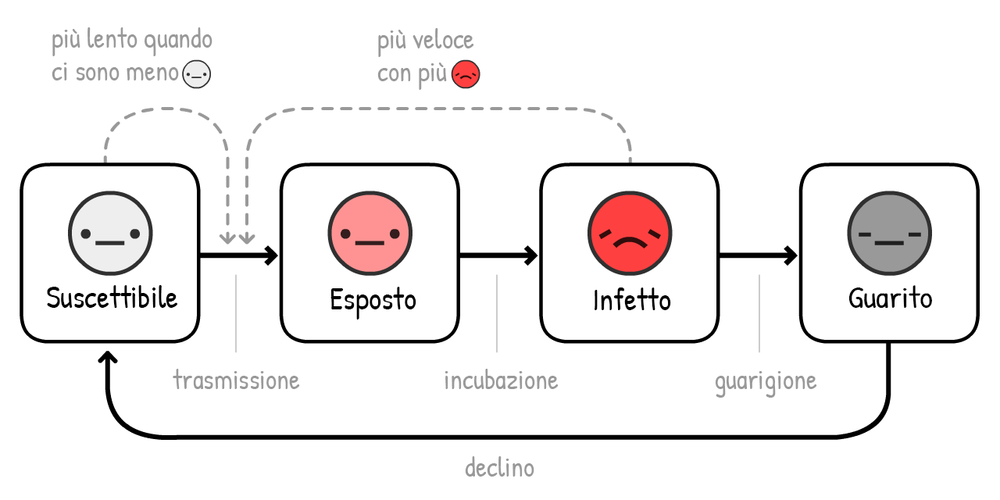
Ora, simuliamo una epidemia COVID-19, in 10 anni, con nessun intervento... se l'immunità dura solo un anno:
Nella simulazione precedente, avevamo solo un picco di saturazione di terapie intensive. Ora, ne abbiamo molte ed i casi
R = 1, è endemica.
Fortunatamente, dato che l'estate riduce R, la situazione migliorerà:
Oh.
Al contrario di quanto si pensi, l'estate rende i picchi peggiori e regolari! Questo perchè l'estate riducei i nuovi
Fortunatamente, la soluzione è abbastanza diretta - basta vaccinare le persone ogni autunno/inverno, come facciamo per l'influenza:
(Dopo aver eseguito la simulazione, prova a simulare le vostre campagne di vaccinazione! Ricorda che puoi interrompere/riavviare la simulazione in qualsiasi momento)
Ma ecco la domanda più terrificante:
Che succede se non ci sarà un vaccino per anni? Oppure mai?
Siamo chiari: questo è improbabile. Molti epidemiologi si aspettano un vaccino tra 1 o 2 anni. E' vero che non esiste un vaccino per nessun altro coronavirus ma questo perchè la SARS è stata estinta velocemente e per "la" influenza non è mai valsa la pena investire.
Comunque, i ricercatori di malattie infettive hanno espresso qualche preoccupazione: E se non riusciamo a farne abbastanza?38 E se ci affrettiamo e non è sicuro?39
Anche nel terribile scenario "nessun-vaccino", abbiamo ancora 3 vie di uscita. Dalla più alla meno terribile:
1) Fare interventi R < 1 intermittenti o leggeri, per raggiungere la "immunità di gregge naturale". (Attenzione: questo causerà molte morti e polmoni danneggiati. E non funzionerà se l'immunità non dura.)
2) Fare interventi R < 1 per sempre. Tracciamento dei contatti e indossare mascherine diventeranno la nuova normalità nel mondo post COVID-19, come i test HIV ed usare preservativi è diventato normale nel mondo post-HIV.
3) Fare interventi R < 1 finchè non svilupperemo trattamenti che ridurranno di molto il ricorrere a terapie intensive per il COVID-19. (Che dovremmo farlo comunque!) Ridurre l'uso delle terapie intensive di 10 volte è come incrementare il numero di terapie intensive di 10 volte:
Ecco una simulazione di nessuna immunità, nessun vaccino, e nessun intervento – solo aumentando lentamente la capacità per sopravvivere ai picchi nel lungo termine:
Anche nel peggiore peggiore scenario... la vita va avanti.
. . .
Forse vorresti sfidare le nostre ipotesi e provare diversi numeri di R0. Altrimenti prova a simulare la tua combinazione di piani di intervento!
Ecco una modalità di prova (opzionale), con tutto a disposizione. (scorri per vedere tutte le opzioni) Simula e divertiti con quello che ti pare:
Questo semplice "simulatore di volo epidemiologico" ci ha insegnato così tanto. Ci ha permesso di rispondere alle domande dei mesi passati, dei prossimi mesi e prossimi anni.
Quindi finalmente, torniamo a...
L'aereo è affondato. Siamo corsi sulle scialuppe di salvataggio. E' ora di toccare terra.
Alcune squadre di epidemiologi e politici (di sinstra, di destra, e trasversali) hanno raggiunto un consenso su come sconfiggere il COVID-19, proteggendo allo stesso tempo le nostre vite e le nostre libertà.
Questa è l'idea generale, con dei piani B (su cui c'è meno consenso):
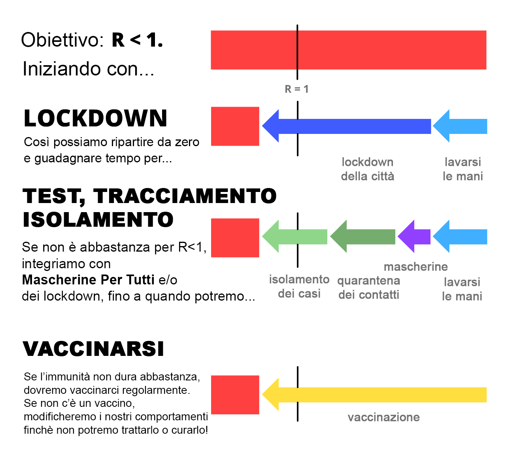
Quindi cosa significa questo per TE, ora?
Per tutti: Rispetta il lockdown in modo che possiamo uscire dalla fase 1 il prima possibile. Continua a lavarti le mani. Fatti una maschera. Scarica una app di tracciamento contatti (che sia rispettosa della privacy) quando saranno disponibili il prossimo mese. Mantieniti in forma, sia fisicamente che psicologicamente! E scrivi ai tuoi referenti politici, "alza il culo e..."
Per i politici: Fai leggi che supportino la gente che che deve autoisolarsi o stare in quarantena. Assumi più tracciatori di contatti manuali, che siano supportati da app di tracciamento rispettose della privacy. Sposta fondi verso cose che dovremmo produrre di più, tipo...
Per i produttori: Produci più test. Produci più ventilatori. Produci più dispositivi di protezione personale per gli ospedali. Più test. Più mascherine. Più app. Produci antivirali, trattementi profilattici ed altri trattamenti diversi dai vaccini. Lavora sui vaccini. Produci test. Più test. Ancora test. Costruisci speranza.
Non minimizzare la paura per costruire speranza. La nostra paura dovrebbe allearsi con la speranza, come gli inventori di aereoplani e gli inventori di paracaduti. Prepararandosi a futuri terribili è il modo in cui creaimo futuri in cui sperare.
L'unica cosa di cui aver paura è l'idea che la paura sia l'unica cosa di cui aver paura.
Queste note conteranno fonti, link o commenti aggiuntivi. Tipo questo!
Questa guida è stata pubblica il 1 Maggio, 2020. Molti dettagli diventeranno obsoleti, ma siamo fiduciosi che questa guida coprirà il 95% dei possibili futuri, e che l'epidemiologia di base rimarrà sempre utile.↩
“L'intervallo [seriale] medio è stato di 3,96 giorni (95% IC 3,53–4,39 giorni)”. Du Z, Xu X, Wu Y, Wang L, Cowling BJ, Ancel Meyers L (Attenzione: gli articoli pubblicati in anteprima non vanno considerati una versione finale)↩
Ricorda: tutte queste simulazioni sono ipersemplificate a scopo didattico.
Esempio di semplificazione: Quanto dici al simulatore "Infetta 1 nuova persona ogni X giorni", quello che il simulatore fa è aumentare il numero di infettati di 1/X ogni giorno. La stessa cosa vale per impostazioni che vedremo nelle prossime simulazioni – "Guarisci ogni X giorni" vuol dire riduci il numero di infettati di 1/X ogni giorno.
Le due cose (quello che "dici" al simulatore e quello che "fa") non sono esattamente equivalenti ma ci vanno vicino. A scopo didattico è meno comprensibile impostare direttamente un tasso di trasmissione/guarigione.↩
“Il periodo di comunicabilità mediano [...] è stato di 9,5 giorni.” Hu, Z., Song, C., Xu, C. et al Sì, sappiamo che la "median" non è la stessa cosa della media. Ma a scopo didattico ci si avvicina.↩
Per una spiegazione più tecnica del modello SIR, vedi the Institute for Disease Modeling e Wikipedia↩
Per spiegazioni più tecniche del modello SEIR, vedi the Institute for Disease Modeling e Wikipedia↩
“Assumendo una distribuzione del periodo di incubazione con media a 5,2 giorni ricavara da uno studio dei primi casi di COVID-19, deduciamo che l'infettività ha inizio 2,3 giorni (IC 95%, 0,8–3,0 giorni) prima dell'inizio dei sintomi” (traduzione: Se i sintomi iniziano al giorno 5, l'infettività inizia 2 giorni prima, ovvero al giorno 3) He, X., Lau, E.H.Y., Wu, P. et al.↩
“Il valore mediano di R per l'influenza stagionale è stato di 1,28 (IQR: 1,19–1,37)” Biggerstaff, M., Cauchemez, S., Reed, C. et al.↩
“Stimiamo che il numero di riproduzione di base R0 di 2019-nCoV essere intorno a 2,2 (intervallo di credibilità al 90%: 1,4–3,8)” Riou J, Althaus CL.↩
“abbiamo calcolato un valore mediano di R0 pari a 5,7 (IC 95% 3,8–8,9)” Sanche S, Lin YT, Xu C, Romero-Severson E, Hengartner N, Ke R.↩
Ciò fingendo che tu sia infettivo allo stesso modo durante il tuo "periodo di infettività". Di nuovo una semplificazione a scopo didattico.↩
Ricorda che R = R0 * il rapporto di contagi ancora permessi. Ricorda anche che il rapporto di contagi permessi = 1 - rapporto di contagi impediti.
Quindi, per avere R < 1, hai bisgno di avere R0 * ContagiPermessi < 1.
Quindi, ContagiPermessi < 1/R0
Quindi, 1 - ContagiImpediti < 1/R0
Qunidi, ContagiImpediti > 1 - 1/R0
Quindi, hai bisogno di impedire più di 1 - 1/R0 contagi per avere R < 1 e fermare il virus!↩
"Percentuale di casi di COVID-19 negli Stati Uniti dal 12 Febbraio al 16 Marzo 2020 che hanno richiesto ricovero in terapia intensiva, per fasce di età". Tra il 4.9% e il 11.5% di tutti i casi di COVID-19 hanno richiesto il ricovero in terapia intensiva. Scegliendo, ottimisticamente, il limite inferiore, si tratta del 5%, cioé 1 su 20. Si noti che questo totale è specifico della struttura demografica degli USA, e sarà dunque più alto in Paesi dove l'età media è più alta e più basso in Paesi dove è più bassa.↩
“Numero di letti in terapia intensiva = 96,596”. Secondo the Society of Critical Care Medicine il numero degli abitanti degli USA era 328,200,000 nel 2019. 96,596 su 328,200,000 = circa 1 su 3400.↩
“Dice che il vero obiettivo è lo stesso che si pongono gli altri Paesi: appiattire la curva scaglionando l'insorgenza dei contagi. Di conseguenza, la nazione potrebbe raggiungere l'immunità di gregge; è un effetto collaterale, non un fine. [...] Il piano d'azione attuale del governo in materia di coronavirus, disponibile online, non menziona affatto l'immunità di gregge.”
“tutti e otto gli studi pertinenti riportano che lavarsi le mani riduce il rischio di malattie respiratorie, con una riduzione del rischio che varia tra il 6% e il 44% [valore aggregato 24% (95% CI 6–40%)].” Per semplicità, in queste simulazioni abbiamo arrotondato per eccesso il valore aggregato al 25%. Rabie, T. and Curtis, V. Nota: come indicato da questa meta-analisi, la qualità degli studi sul lavarsi le mani è (almeno per quel che riguarda i Paesi ad alto reddito) pessima.↩
“Abbiamo osservato una riduzione del 73% nel numero medio di contatti quotidiani per partecipante. Questo sarebbe sufficiente per portare R0 da un valore di 2.6 prima del lockdown a 0.62 (0.37 - 0.89) durante il lockdown”. Per semplicità, in queste simulazioni abbiamo arrotondato per difetto al 70%. Jarvis and Zandvoort et al↩
Questa distorsione non ci sarebbe se R fosse proiettato su una scala logaritmica... ma in tal caso ci sarebbe da spiegare cosa sia una scala logaritmica.↩
“In assenza di altri interventi, un modo per valutare il successo del distanziamento sociale è il superamento della capacità dei reparti di terapia intensiva. Per evitare che questo accada, potrebbe essere necessario un distanziamento sociale prolungato o intermittente fino al 2022.” Kissler and Tedijanto et al↩
Vedi la Figura 6 di Holt-Lunstad & Smith 2010. Certo, è importante tenere a mente che quella che viene riportata è soltanto una correlazione. Ma a meno di voler voler sperimentare condannando persone a caso alla soluitudine vita natural durante, non si può avere molto oltre all'evidenza osservativa.↩
media di 3 giorni prima della fase contagiosa: “Ipotizzando, in base ai dati di un altro studio relativo ai primi casi di COVID-19, una distribuzione del periodo di incubazione in media di 5,2 giorni, abbiamo dedotto che la fase contagiosa inizia già 2,3 giorni (95% CI, 0,8-3,0 giorni) prima dell'insorgenza dei sintomi.” (tradotto: Assumendo che i sintomi si manifestino al giorno 5, la fase contagiosa ha inizio 2 giorni prima = La fase contagiosa inizia al giorno 3) He, X., Lau, E.H.Y., Wu, P. et al.
media di 4 giorni prima di contagiare qualcun altro: “L'intervallo [seriale] medio è di 3.96 giorni (95% CI 3.53–4.39 giorni)” Du Z, Xu X, Wu Y, Wang L, Cowling BJ, Ancel Meyers L
media di 5 prima di accorgersi dei sintomi: “Si stima che la mediana del periodo di incubazione sia 5.1 days (95% CI, 4.5 to 5.8 giorni)” Lauer SA, Grantz KH, Bi Q, et al↩
“Stimiamo che il 44% (intervallo di confidenza 95%, 25–69%) dei casi secondari sia stato infettato durante la fase presintomatica dei casi di riferimento” He, X., Lau, E.H.Y., Wu, P. et al↩
“Il contact tracing è stato decisivo in Liberia ed ha rappresentato uno dei più grandi sforzi nella storia in materia di tracciamento dei contatti durante un'epidemia.” Swanson KC, Altare C, Wesseh CS, et al.↩
Per prevenire il "pranking" (persone che dichiarano, mentendo, di essere infette), il Protocollo DP-3T richiede che l'ospedale ti dia uno One-Time Passcode che ti permette di caricare i tuoi messaggi.
I falsi positivi sono un problema sia nel contact tracing manuale che in quello digitale. Ci sono comunque 2 modi di ridurre i falsi positivi: 1) Notificare Bobs solo se hanno ricevuto, ad esempio, almeno 30 min di messaggi, non uno solo di sfuggita. 2) Se l'applicazione pensa davvero che Bob è stato esposto, può indirizzare Bob ad un contact tracer manuale per una successiva intervista approfondita faccia a faccia.
Per altri problemi di banda, integrità del codice sorgent, e altri aspetti legati alla sicurezza, dai un'occhiata agli open-source DP-3T whitepapers!↩
Temporary Contact Numbers, un protocollo di contact tracing a tutela della privacy↩
Apple e Google in collaborazione per la tecnologia di contact tracing per il COVID-19. Nota che non sono loro stessi a realizzare le app, stanno soltanto creando l'infrastruttura che andrà a supportarle.↩
Molti notiziari - e a dire il vero anche molti articoli scientifici - non hanno fatto distinzioni tra "casi che non mostravano sintomi al momento del test" (presintomatici) e "casi che non hanno mai mostrato sintomi" (veri asintomatici). L'unico modo per distinguerli è di seguirli nel tempo.
Che è quello che è stato fatto in questo studio. (Disclaimer: "gli articoli pubblicati in anteprima non vanno considerati una versione finale.") In un call center in Corea del Sud che presentava un focolaio di COVID-19, "solo 4 (1.9%) sono rimasti asintomatici per tutti e 14 i giorni di quarantena, e nessuno dei loro contatti familiari ha contratto infezioni secondarie."
Questo significa che i "veri asintomatici" sono rari, e che prendere il virus da un vero asintomatico potrebbe essere più raro ancora!↩
Dallo stesso studio di Oxford che per primo ha raccomandato l'utilizzo di app nella lotta al COVID-19: Luca Ferretti & Chris Wymant et al Vedi Figura 2. Assumendo R0 = 2.0, hanno osservato che:↩
Qualunque vero scienziato stia leggendo questa ultima frase sta probabilmente piangendo dal ridere, in questo momento. Vedi: p-hacking, la crisi della replicazione)↩
“È tempo di applicare il principio di precauzione” Trisha Greenhalgh et al [PDF]↩
Davies, A., Thompson, K., Giri, K., Kafatos, G., Walker, J., & Bennett, A Vedi Tabella 1: una maglietta 100% cotone ha all'incirca i 2/3 della capacità di filtraggio di una mascherina chirurgica, per i due aerosol batterici testati.↩
"Dobbiamo tenere da parte le mascherine per gli ospedali." Assolutamente d'accordo. Ma qui si tratta più di potenziare la produzione di mascherine, non dii razionare. Nel frattempo, possiamo farci le mascherine di stoffa.↩
“Un aumento della temperatura di un grado Celsius [...] abbassa R dellp 0.0225” e “Il valore medio di R in queste 100 città è 1.83”. 0.0225 ÷ 1.83 = ~1.2%. Wang, Jingyuan and Tang, Ke and Feng, Kai and Lv, Weifeng↩
Nel 2019, a Central Park, nel mese più caldo (luglio) la temperatura era di 79.6°F, nel più freddo (Gennaio) di 32.5°F. La differenza è di 47.1°F, cioè ~26°C. PDF from Weather.gov↩
“Una volta che una persona sconfigge il virus, le particelle virali tendono a permanere un po' di tempo. Queste non possono causare infezioni, ma possono far risultare un test ancora positivo.” da STAT News by Andrew Joseph↩
Da Bao et al. Avvertenza: Questo articolo è una prestampa e non è stato certificato da esperti (ancora). Inoltre, per enfatizzare: hanno solo testato la re-infezione 28 giorni dopo.↩
“Se arriverà un vaccino per il coronavirus, riuscirà il mondo a produrne abbastanza?” by Roxanne Khamsi, su Nature↩
“Non affrettatevi a sviluppare medicine e vaccini per il COVID-19 senza garanzie di sicurezza sufficienti” by Shibo Jiang, su Nature↩
 PUBBLICO DOMINIO
Significa che hai già l'autorizzazione a riutilizzare e modificare qualunque cosa trovi in questa pagina, illustrazioni/codice/parole - su blog, siti di notizie, aule, ovunque!
PUBBLICO DOMINIO
Significa che hai già l'autorizzazione a riutilizzare e modificare qualunque cosa trovi in questa pagina, illustrazioni/codice/parole - su blog, siti di notizie, aule, ovunque!